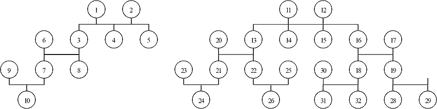

Home Page
F.A.Qs
Statistical Charts
Past Contests
Scheduled Contests
Award Contest
| Online Judge | Problem Set | Authors | Online Contests | User | ||||||
|---|---|---|---|---|---|---|---|---|---|---|
| Web Board Home Page F.A.Qs Statistical Charts | Current Contest Past Contests Scheduled Contests Award Contest | |||||||||
|
Language: Eugenics
Description Eugenics is the basis for our healthy development. Almost all nations are issuing laws to enforce or advocate eugenics. According to research in genetics, many diseases will have a high probability to be passed down to the descendants who were born from intermarriage. Thus, preventing intermarriage has become an important part of eugenics. In China, it is now against the law to have intermarriage. The marriage law states, “No marriage may be contracted… if the man and the woman are lineal relatives by blood, or collateral relatives by blood up to the third degree of kinship…” One cannot marry his/her parents or grandparents, nor can he/she marry his/her children or grandchildren. Marriage with his/her sisters/brothers, cousins, aunts/uncles, nieces/nephews is also forbidden. As a staff of the Civil Affairs Bureau, you often have to check whether two people can have a marriage based on the family trees given, for example:  Nodes in the family tree represent persons and the numbers on the nodes represent names. So now if 10 and 24 come for a marriage license, by checking family tree, it is OK and we output “marriage”, if 24 and 26 come for marriage, surely it is forbidden and we output “close”. If two people of the same gender come for license, we output “same”. Input The input contains several lines, the first line has two integers, which represent the names of the two persons. The following lines represent the family tree of two persons. Each line has several integers separated by blanks. The first number of each line represents the number of node, and the followed integers represent the direct descendants of he/she. The last integer of each line will be an integer: 0 or −1, representing that the person described in this line is male/female, respectively. The input assures that:
Output The output contains only one line and one word, representing whether the two persons can have a marriage license. If they can, output “marriage”; if they are of the same gender, output “same”; if they are close relatives, output “close”; if they are both same gender and close relatives, output “same”. Sample Input 10 24 1 3 4 5 0 2 3 4 5 -1 3 7 8 -1 4 0 5 0 6 7 8 0 7 10 0 8 -1 9 10 -1 10 -1 11 13 14 15 16 0 12 13 14 15 16 -1 13 21 22 -1 14 0 15 0 16 18 19 -1 17 18 19 0 18 31 32 0 19 28 29 -1 20 21 22 0 21 24 0 22 26 0 23 24 -1 24 0 25 26 -1 26 -1 27 28 29 0 28 -1 29 0 30 31 32 -1 31 -1 32 0 Sample Output marriage Source POJ Monthly--2007.04.01, Huang, Jinsong |
[Submit] [Go Back] [Status] [Discuss]
All Rights Reserved 2003-2013 Ying Fuchen,Xu Pengcheng,Xie Di
Any problem, Please Contact Administrator